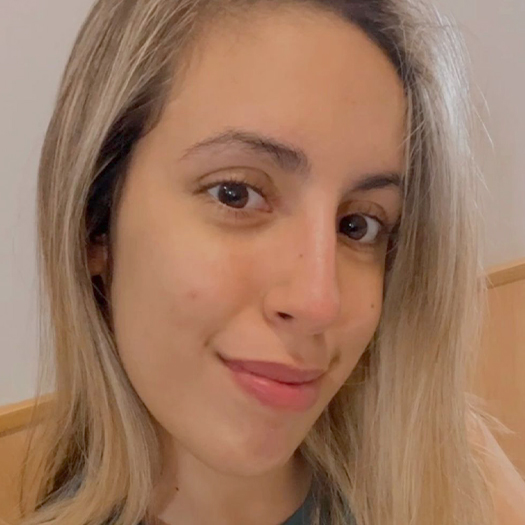
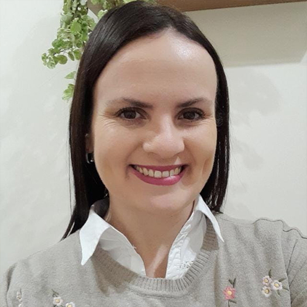
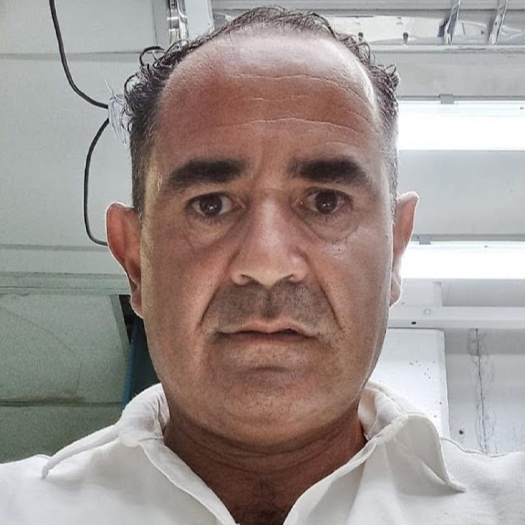
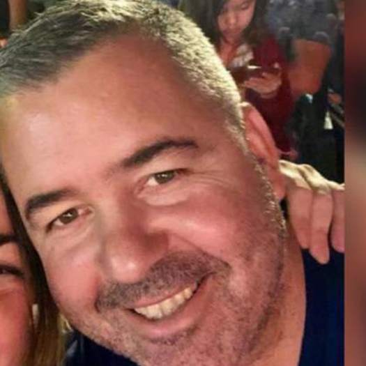

ALEJANDRA MARÚN
En este relato personal, reflexiono sobre mi proceso de transformación y crecimiento. Reconozco que a veces busco recibir lo que no doy, como el perdón. A lo largo del tiempo, he cometido errores y me arrepentí sinceramente. Sin embargo, lidiar con la comprensión y el perdón de otros ha sido un desafío. He aprendido a valorar el proceso de perdón y a no dilatarlo. Mis recomendaciones a mis hijos y seres queridos a veces no se alineaban con mi propia vida. He comprendido la importancia de cuidarme a mí misma y aplicar el lema "porque me quiero, me cuido". He experimentado cambios en mi vida, como mudanzas, finalización de relaciones y cambio de empleo. Algunos cambios fueron difíciles y requerían tiempo y preparación. A lo largo de esta transformación, tuve un mentor que me guió y reflejó mis pendientes y sueños. Aunque enfrento dificultades para dejar mi zona de confort, he aprendido a premiarme y valorarme más. Reconozco que los premios internos son esenciales para el crecimiento emocional. Me esfuerzo por otorgarme cariño y reconocimiento en mi camino de cambios. He aprendido a desaprender hábitos automáticos y estar más consciente de oportunidades. Establezco armonía entre mi tiempo personal y laboral, aprendiendo a delegar y comunicarme efectivamente. Aunque enfrenté inseguridades y autocrítica, ahora aspiro a ayudar a otros. Ofrezco herramientas personalizadas para planificar proyectos de vida, con enfoque comercial, emprendedor o familiar. La gestión de emociones es crucial. Valoro resignificar errores como oportunidades de aprendizaje. Quiero ser mentora y compartir lo aprendido. Creo en la capacidad de transformar emociones negativas en valiosas oportunidades de crecimiento. Mi objetivo es guiar hacia una vida plena y significativa, brindando apoyo incondicional para alcanzar la felicidad y el bienestar merecidos. Juntos, transformaremos emociones en oportunidades para crecer y brillar.
MI PREPARACIÓN
A lo largo de mi formación académica, he visto cómo mis estudios han nutrido y fortalecido aspectos inherentes en mí, como mi sensibilidad, pasión y el deseo constante de adquirir más conocimiento, especialmente al impulsar mi creatividad. He integrado aprendizajes tanto de la vida como de la amplia gama de recursos que nos brinda el mundo digital. Los libros siempre han sido una parte natural de mi vida, tan esenciales como beber agua, y esto ha ayudado a construir mis hábitos, alimentando mi insaciable curiosidad y mi profunda necesidad de ayudar a los demás. Mi carrera en la música, que he ejercido durante años, ha intensificado mi sensibilidad, agudizando mis sentidos y llenando mi existencia de perspectivas subjetivas, como percepciones, señales y fe. He aprendido a valorar la maravilla de la diversidad y lo heterogéneo, contribuyendo así a mi formación, logros y acciones. En mi experiencia como educador, he hallado el equilibrio perfecto entre lo pedagógico y lo didáctico, nutriéndome de empatía para enfrentar los variados desafíos de llegar a cada individuo, conectando con su esencia y sus instintos de superación y supervivencia. Promuevo un respeto profundo por las diversas interacciones en las relaciones humanas. Como Productor Asesor de Seguros, siento que mi contribución es especialmente valiosa cuando las personas están en situaciones de estrés o vulnerabilidad debido a un accidente. Cada vez más, comprendo que ofrecer las palabras adecuadas en el momento oportuno no solo resuelve situaciones presentes y futuras, sino que también brinda un apoyo y cuidado fundamentales, una experiencia que perduran en la memoria. Mi espíritu insaciable siempre busca más, impulsado por un deseo inquebrantable de mejorar, transformar y cambiar lo posible. Para mí, el ideal de un mundo y una vida mejores no es solo un sueño inalcanzable, sino algo alcanzable y viable. A través de mis esfuerzos, me dedico a contribuir a esta visión y promover el bienestar y la mejora en todo lo que alcance.


¿QUÉ ES LA MENTORÍA MOTIVACIONAL?
Es un camino para recomenzar, reinventarse y lograr objetivos con claridad secuencial y temporal, potenciando la Inteligencia Emocional y el Rendimiento, encapsulando lo desafiante y mágico de los encuentros donde la conexión alimenta la creatividad y el pensamiento en todas las áreas, convirtiéndose así en el combustible que nos permite crecer y abrazar nuevas posibilidades con entusiasmo y confianza. Juntos, trazaremos un plan con metas específicas porque CUANDO LO MEJOR ES POSIBLE, LO BUENO NO ES SUFICIENTE.
FORMATOS DE MENTORÍAS
En circunstancias adversas, trabajar por y para la concreción de nuestros sueños, es lo que le da sentido a nuestra vida.
María Alejandra MarúnMENTORING PARA DAR SOPORTE A EMPRESAS Y PYMES
Es una práctica cada vez más habitual en empresas de cualquier tamaño y sector, ya que hoy en día está considerada como un camino
efectivo para el éxito organizacional. Esto se logra fomentando el desarrollo y el logro de metas a través de la orientación experta y el compromiso
activo, con el objetivo de obtener los máximos beneficios.
El mentoring puede aplicarse tanto a empresarios como a empleados, respaldando el modelo de negocio, aumentando la eficiencia, comprendiendo mejor
la cultura corporativa, impulsando el trabajo en equipo, rescatando talentos, mejorando la productividad y alineando indicadores con objetivos,
siempre con un enfoque tanto profesional como personal.
MENTORING PARA EMPRESAS FAMILIARES
Cuidadosa y cautelosamente, el mentor aborda desafíos a través de un Plan de Prioridades, tales como la comunicación, la asignación
de roles, la delegación de tareas, la construcción de relaciones de confianza y la gestión de conversaciones difíciles. Esto implica repensar, redefinir
y acercar expectativas y perspectivas con relevos generacionales.
Quiero ser tu mentora para evitar situaciones límite, manteniendo un equilibrio entre lo familiar y lo empresarial.
Mi desafío y compromiso es acompañarte y guiarte, ya que he comprobado que fortalecer las relaciones potencia tu empresa familiar de manera asombrosa
e innegable.
MENTORING PARA DAR SOPORTE A EMPRENDEDORES
Con espíritu emprendedor, se amalgaman el Poder, el Saber y el Querer, pues con querer no alcanza, ni tampoco con tener conocimientos
y habilidades; incluso con poder tampoco es suficiente: se necesita cabeza y corazón. Cada emprendimiento es único!
Como Mentora, te acompaño a buscar un valor diferencial que mejore resultados y se ajuste a necesidades cambiantes. Ofrezco análisis de mercado y
estrategias innovadoras a corto, mediano y largo plazo, con un diagnóstico que repetimos en momentos clave. Mi intervención guía el proceso y ajusta
el itinerario según la evolución.
MENTORÍA
Alejandra MarúnSi eres un EMPRENDEDOR - EMPRENDEDORA y te pasa que:
Procrastinas constantemente tu negocio.
Nunca tienes tiempo para nada, ni tu negocio ni tu vida.
Sabes que eres el principal saboteador de tu éxito.
Sientes miedo al futuro, te cuesta encarar tu negocio.
Estás sobrecargado de actividades y responsabilidades que no sabes qué ni cómo abordar.
Sientes incertidumbre por el contexto, por eso no emprendes.
Realmente quieres que tu negocio funcione, pero no sabes por dónde empezar.
Y has intentado en el pasado resolver esto con:
Capacitaciones que luego, en la práctica, no sabes implementar, haciendo modificaciones en tu emprendimiento que no resuenan contigo.
Haces cambios que no puedes sostener en el tiempo.
Haces más, pero no obtienes el resultado que deseas.
Y sin embargo, todavía no has podido lograr:
Tener tiempo de calidad para tu emprendimiento y tu vida.
Facturar más con tu profesión o emprendimiento.
Visualizar e incrementar oportunidades de mejora y crecimiento.
Focalizar tu energía para que tu proyecto funcione.
Minimizar márgenes de error del negocio.
Buscar nuevos aliados que ayuden a tu crecimiento.
Por fin empezar, facturar, crecer.
Capacitaciones que luego, en la práctica, no sabes implementar, haciendo modificaciones en tu emprendimiento que no resuenan contigo.
Haces cambios que no puedes sostener en el tiempo.
Haces más, pero no obtienes el resultado que deseas.
Y sin embargo, todavía no has podido lograr:
Tener tiempo de calidad para tu emprendimiento y tu vida.
Facturar más con tu profesión o emprendimiento.
Visualizar e incrementar oportunidades de mejora y crecimiento.
Focalizar tu energía para que tu proyecto funcione.
Minimizar márgenes de error del negocio.
Buscar nuevos aliados que ayuden a tu crecimiento.
Por fin empezar, facturar, crecer.
Yo, Ale Marún, puedo ayudarte a resolver esto! Ayudo a emprendedores a crear un negocio sólido y escalable mediante mis servicios de mentorías personalizadas.
Mi Mentoring consta de:
6 Sesiones vía Zoom o Meet donde trabajaremos las siguientes temáticas:
Análisis y evaluación de tu negocio actual.
Planificación Estratégica para maximizar tiempos y resultados.
Cómo Planificar el crecimiento: oportunidades de mejora y optimización
de procesos.
La importancia de Innovar: ¿qué?, ¿cómo?.
Sostener lo que sí realmente funciona.
Buzón de sugerencias y expectativas tanto de clientes como potenciales.
clientes, asesores, colegas.
La motivación: el combustible de los resultados.
El ABC del Crecimiento.

TESTIMONIOS

Hola Aleeee! Inicié mis primeros pasos con la Mentoría después de dejar mi trabajo de 12 años. Con mucho miedo, comencé de manera independiente como Productora Asesora de Seguros. Siento, siendo totalmente honesta, que mis miedos eran mayores debido a creencias absorbidas sobre cuánto me ayudarías, me asesorarías siendo colega. Y para mi sorpresa, pude apoyarme tanto profesional como personalmente. Tu insistencia en ser más puntual con mis actividades, tus ganas y energía, tus propuestas para abrirme a mejorar opciones para mis clientes y, por ende, mi trabajo; ¡no guardaste nada para ti!... fue realmente una experiencia abarcadora, generosa y comprometida que superó mis miedos y, por supuesto, mis expectativas. ¡La Mentoría fue el inicio de una apertura mental que no conocía!
María José Rodríguez

Conocerte como consecuencia de un dolor tan grande como lo fue el fallecimiento por Covid de mi padre, que era tu mentee, me planteó interrogantes sobre si seguir o no sus pasos... tu dulzura, calidez, convicciones y firmeza fueron en cada sesión el hilo conductor y la bisagra para que me redescubriera y rearmara mi proyecto de vida y el comercial-familiar. La tecnología suplió con creces las distancias geográficas y así es que pude sentirme escuchada y contenida para avanzar hacia mi propósito con mi alma emprendedora.
Anita Basanta

Siempre voy a recordar esa manera tan ágil y perspicaz de indagar para que busque y reconozca mis respuestas. Tus Mentorías me han permitido descubrir un mundo de posibilidades que no reconocía y estaban dentro de mí. Me hiciste sentir en confianza plena, ayudándome a darme cuenta de lo que soy capaz y de que realmente puedo lograr las metas que desee amalgamando perfectamente mi rol como mamá, esposa y trabajadora independiente. Sigo hoy sintiendo la misma emoción, la misma confianza absoluta y el mismo empoderamiento que sentía en esos espacios de Mentoría, e incluso en los seguimientos.
Vale Guizzo
¡GRACIAS Ale! Desde que te conocí, me ayudaste a reorganizarme con mi emprendimiento que incidió en mi vida personal. Es increíble cuánto abrí mi cabeza para incorporar nuevas técnicas de venta, expandirme abrazando tecnologías y atreviéndome a delegar. Tus consejos, opiniones, asesoramiento, guías, materiales de lectura hicieron que pudiera ver y abordar mi empresa con el plus del emprendimiento constante que ahora abrazo feliz porque me encuentro más firme y pleno cumpliéndolo paso a paso.
Sergio Prado

Como cliente tuyo en el rubro Seguro y por un hecho infortuito es que comenzamos la Mentoría. Si bien yo tenía una idea de qué hacer, poder ir dándole forma con una mirada más abarcadora, más general, hizo que me contagiara a atreverme, motivándome en todo momento. Tu visión en los negocios, tus palabras, tus herramientas tan distintas fueron el combo perfecto y necesario para crecer y superarme. ¡Y voy por más proyectos!
Sergio Adrián GómezEncontré en Alejandra una profesional apasionada por lo que hace, con su espíritu emprendedor y en evolución constante. Sus raíces en la docencia se ven reflejadas en su habilidad para acompañar, motivar y capacitar. Valoro enormemente su sinceridad y transparencia.
Rodrigo Segura

Alejandra es una luchadora incansable de mil batallas, un ser con la capacidad de reinventarse y transformar su entorno en un ambiente más humano y prolífico. La vida la llevó por diferentes escenarios, los cuales conquistó a partir de su fuerza emprendedora, su tesón y su incansable voluntad. Hoy, con varios años en la actividad aseguradora, es un caso de éxito, de reinversión continua, poniendo como estandarte el asesoramiento y acompañamiento continuo de sus asegurados, superando incluso los desafíos que genera una Empresa Familiar. Sin lugar a dudas, es una persona colmada de virtudes y muy generosa a la hora de compartirlas, con fuerte base en el análisis de las conductas humanas, basado en la interpretación y búsqueda de soluciones, un perfil ideal para comenzar a generar experiencias en la mentoría.
Marcelo RambaudiMENTORÍA 1 - 1
● 6 sesiones individuales de 1:15hs donde trabajaremos vos y yo maximizando el tiempo para tu mayor provecho.
● Acceso a las reuniones grabadas.
● Seguimiento + Feedback mediante un grupo de WhastApp a fin de sacar todas tus dudas y puedas preguntar y consultar de manera que nuestra comunicación sea fluida.
● Acceso a todo el material complementario: Pdf, E - book.
● Road Map: hoja de ruta para llevar todos tus módulos, y metas exitosamente.
● Paso a paso de cada proceso, de cada etapa.
Bonus extra: "S.P.A. 365" (Soporte Post-Asistencia), ¡LOS 365 DÍAS DEL AÑO!
Y... para los primeros diez inscriptos, Bonus Especial:
¡Desayuno para Emprendedores con invitados sorpresa!
CONSULTAR COSTO POR WHATSAPP
Si eres un PROFESIONAL:
Si te has esforzado para saber lo que sabes y hoy lo brindas con calidad, compromiso y responsabilidad, necesitas validarlo haciendo que tus clientes paguen gustosos tu servicio. La Mentoría será de gran ayuda para trabajar tu Perfil Profesional en el mundo de los negocios:
Obtendrás:
Plan de acción personalizado e institucional: de manera integral y gradual que te guiará en cada etapa.
Mapa estratégico: a la medida de tus habilidades, tu sector, tu situación personal, tu equipo.
Gestión empresarial: modelo de negocio que funcione para tu empresa.
Visión empresarial renovada: con mayor capacidad para motivar al personal y tomar decisiones estratégicas.
Realización personal: tu entorno y tus clientes reconocerán tu trabajo. Encontrarás sinergias, pues tendrás el tipo de vida que quieres llevar, ya seas un Profesional Novato o Experimentado.
MENTORÍA 1 - 1
● 8 sesiones individuales de 1:30hs donde trabajaremos maximizando el tiempo para tu mayor provecho.
● Acceso a las reuniones grabadas.
● Seguimiento + feedback mediante un grupo de whatsapp a fin de sacar todas tus dudas y puedas preguntar y consultar de manera que nuestra comunicación sea fluída.
Bonus extra: "S.P.A. 365" (Soporte Post-Asistencia), ¡LOS 365 DÍAS DEL AÑO!
Y....para los primeros diez inscriptos, Bonus Especial:
¡Workshop con invitados sorpresa!
CONSULTAR COSTO POR WHATSAPP
¿Por qué confiar en mí?
"Alejandra es una luchadora incansable de mil batallas, un Ser con la capacidad de reinventarse y transformar su entorno en un ambiente más humano y prolífero. La vida la llevó por diferentes escenarios, los cuales conquistó a partir de su fuerza emprendedora, su tesón y su incansable voluntad. Hoy, con varios años en la actividad aseguradora, es un caso de éxito, de reinversión continua, poniendo como estandarte el asesoramiento y acompañamiento continuo de sus asegurados, superando incluso los desafíos que genera una Empresa Familiar. Sin lugar a dudas es una persona colmada de virtudes y muy generosa a la hora de compartirlas, con fuerte base en el análisis de las conductas humanas, basado en la interpretación y búsqueda de soluciones, un perfil ideal para comenzar a generar experiencias en la mentoría"
Marcelo RambaudiGerente de Sancor, Casa Central Oficinas de Córdoba.
Dejame tu mensaje
y a la brevedad me pondré en contacto con vos.